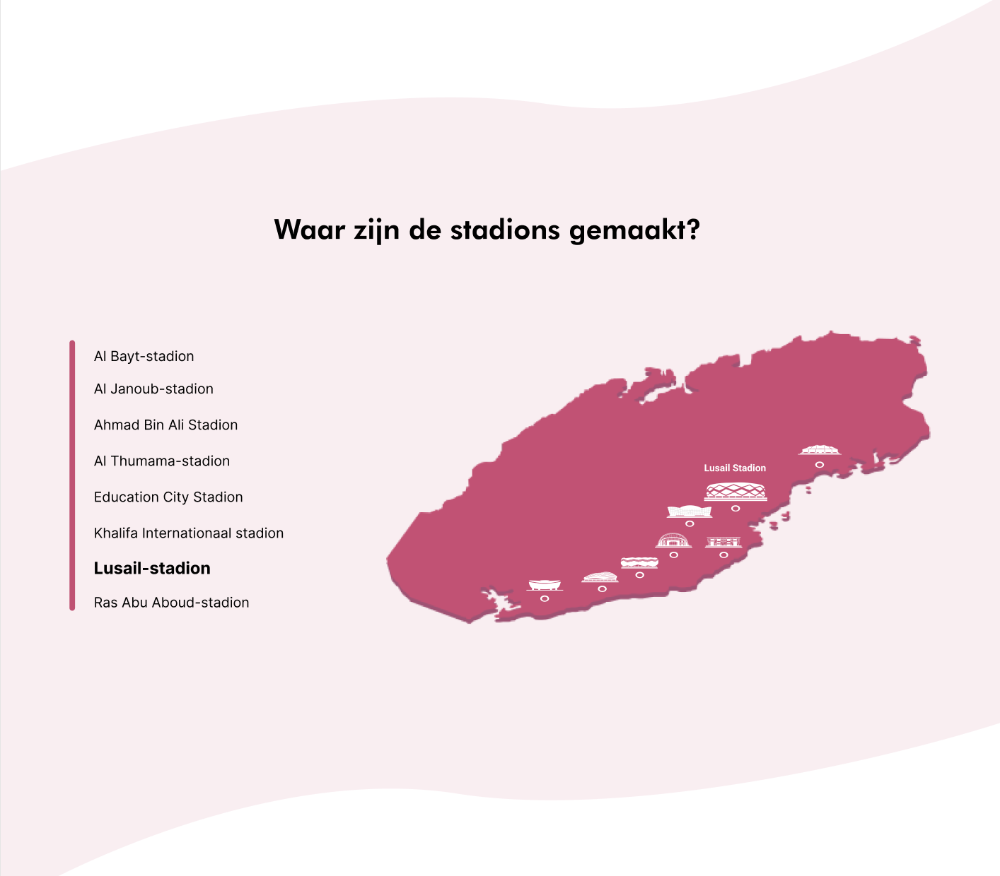

Meesterproef - WK Qatar 2022
Voor de meesterproef hebben wij de opdracht gekregen om een interface te maken voor een casus naar keuze. De casussen waar we uit kon kiezen: Tekst, Beeld, Audio en Video of een eigen artikel. Daarbij moeten wij nadenken over hoe we de interface willen ontwerpen. Willen wij er bijvoorbeeld een informatieve interface van maken of willen we het meer persoonlijk laten lijken? Dat is iets waar we een keuze in moet gaan maken.
Onze keuze
Wij hebben er voor gekozen om aan de slag te gaan met een eigen artikel. We hebben namelijk gemeenschappelijke interesses en willen graag iets kiezen wat actueel is en waar onze interesse naar toe gaat. We kwamen daarom op het idee om aan de slag te gaan met het onderwerp wat gerelateerd is aan een sport die wij uitoefenen. We hebben daarom voor het onderwerp: Misstanden die plaatsvinden bij de voorbereidingen van het wereldkampioenschap voetbal 2022 in Qatar gekozen.
Onze visie
Wij hebben er gezamelijk voor gekozen om met een eigen artikel aan de slag te gaan voor de meesterproef. We hebben namelijk veel gemeenschappelijke interesses en kwamen samen al snel tot een idee waarbij we onze eigen creativiteit konden gebruiken om meer aandacht te vragen voor een best wel belangrijk onderwerp waar van wij vinden dat er te weinig aandacht aan besteed word. Wij kwamen namelijk op het idee om een digitale interface te maken voor het wereldkampioenschap voetbal 2022 in Qatar. Dit onderwerp is momenteel veel in opspraak omdat Qatar, het gastland van dit wk, gastarbeiders uitbuidt die juist voor dit land aan de bouw van stadions en infrastructuur werken.
Deze gastarbeiders krijgen weinig salaris, werken in erg slechte omstandigheden en kunnen eenmaal niet gemakkelijk het land uit als zij dit willen. Er wordt gesproken over moderne slavernij en wij vinden dat voetbalfans hier meer van op de hoogte van gesteld moeten worden, zodat ook deze kant van het WK meer bekend word.
Iconen
Op onze interface hebben we ook gemaakt van verschillende soorten iconen. Wij kregen erg positieve complimenten te horen van onze docent Christian Degen over deze iconen. Ons doel was namelijk om eigen gemaakte iconen te ontwikkelen van de stadions die worden gebouwd voor het wereldkampioenschap in Qatar. We wilden deze iconen niet te gedetailleerd illustreren, maar de iconen moesten wel erg consistent aan elkaar zijn.

Het prototype
We hebben er voor gekozen om onze interface te ondersteunen met beeld en animaties om de informatie nog duidelijker op de gebruiker te laten overkomen. Daarnaast hebben we swipe gestures toegevoegd om de gebruiker duidelijk te maken welke acties er allemaal mogelijk zijn in onze interface (horizontaal en verticaal scrollen).
Als laatste wilden wij graag quotes toevoegen, zodat je als gebruiker meer in het gevoel van een arbeider kunt verplaatsen en snapt hoe zij zich voelen.